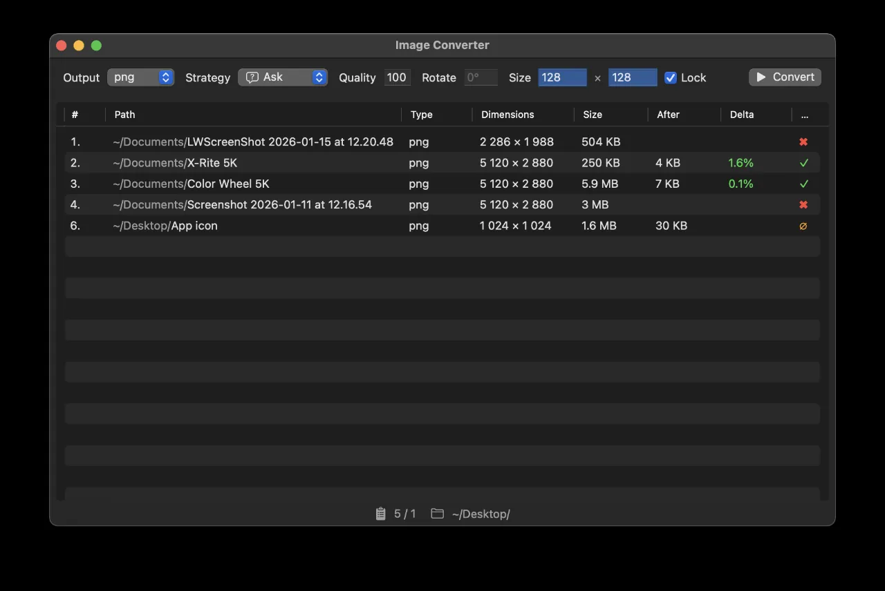

Set it and forget it
Select an active folder and the app watches for new files, converting them the moment they arrive — no manual steps or missed files.
iOS · iPadOS · macOS
Drop it, convert it, done. No cloud uploads, no watermarks — just clean, fast image conversion that respects your originals.

Simple by design
Image Auto Convert turns image conversion into a background task. Drag a file onto the app to convert it instantly, or prepare a batch list and run it whenever you are ready. Either way, you stay in control.
Select an active folder and the app watches for new files, converting them the moment they arrive — no manual steps or missed files.
Save converted files alongside the originals, or route everything to a dedicated output folder. You decide where things end up.
Keep EXIF and other metadata for archival output, or remove it for smaller files and better privacy. Preserve colour profiles for accuracy, or discard them when they are not needed.
Rename automatically, overwrite only when the new file is newer, always overwrite, compare before replacing, or number files incrementally. Choose how existing files are handled.
Scale and rotate images while preserving their aspect ratio, so nothing looks stretched or squashed.
Paste a direct image URL to download and convert it without a browser detour.
Work with GIF, WebP and AVIF alongside standard image formats.
Built for Apple platforms
Looking ahead
Planned support includes RAW formats such as CR2, NEF, ARW and DNG, layered TIFF, and GPU texture formats including KTX2, Basis Universal, DDS and ASTC for developers and game creators.
Privacy
Image processing takes place on your device. Read the privacy and legal notice for details.